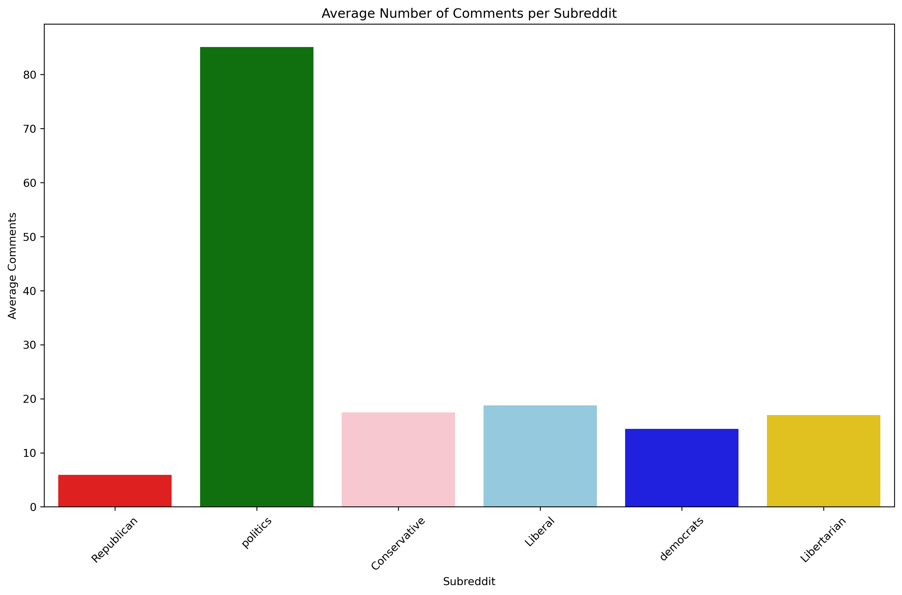
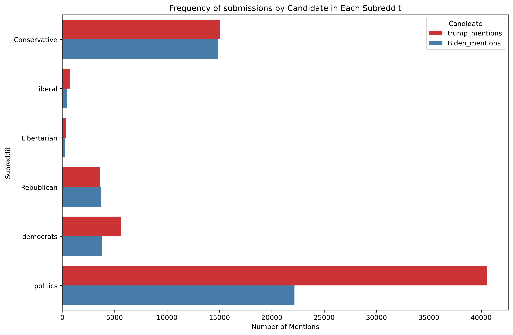
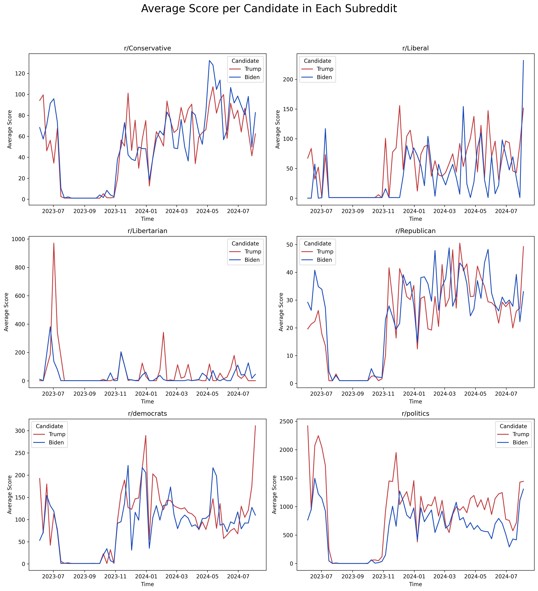
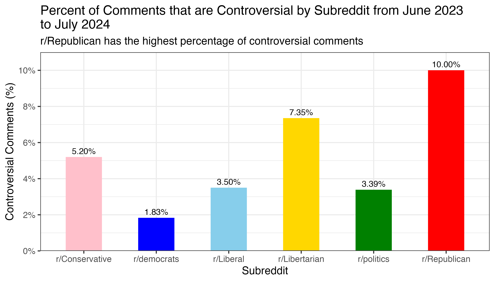
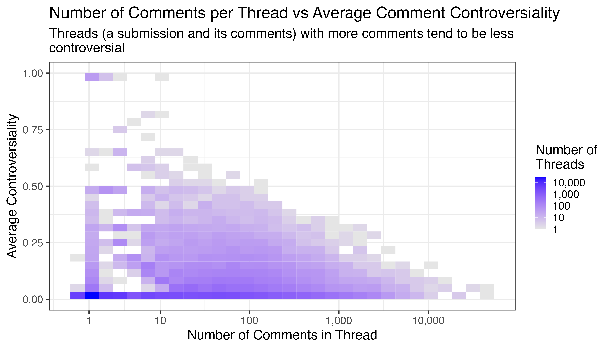
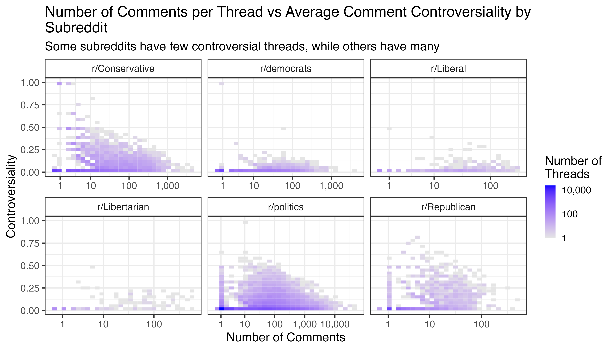
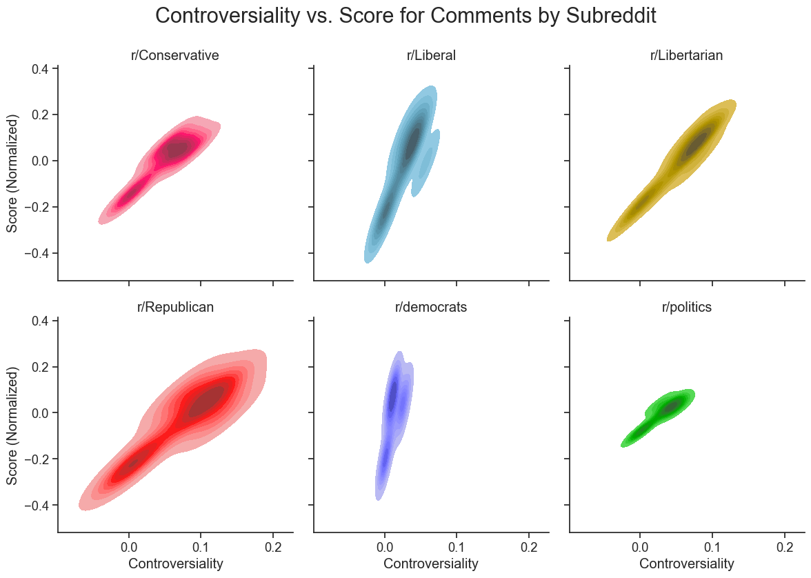

| Political Subreddit Submissions Mentioning Biden or Trump | ||||||
|---|---|---|---|---|---|---|
| Summary statistics on the number of comments and score by subreddit per submission | ||||||
| Number of Comments | Score | Number of Submissions | ||||
| Average | Median | Average | Median | |||
| r/Conservative | 17.5 | 0 | 54.2 | 1 | 27,756 | |
| r/democrats | 14.4 | 1 | 94.5 | 1 | 8,582 | |
| r/Liberal | 18.8 | 0 | 50.2 | 1 | 1,078 | |
| r/Libertarian | 17.0 | 0 | 32.9 | 1 | 561 | |
| r/politics | 85.1 | 2 | 724.9 | 1 | 57,617 | |
| r/Republican | 5.9 | 1 | 23.8 | 5 | 6,762 | |
| Source: Reddit data from June 2023 to July 2024 | ||||||
Exploratory Data Analysis
Executive Summary
Through the exploratory data analysis (EDA) process, we aimed to understand the political engagement on Reddit by analyzing the comments and submissions from six major political subreddits: r/Conservative, r/democrats, r/Liberal, r/Libertarian, r/politics, and r/Republican. We focused on understanding the frequency of conversations about Trump and Biden, the controversiality of threads across the subreddits, and the distribution of political contributions by top authors.
Our analysis revealed that political subreddits tend to discuss Trump more frequently than Biden, though this trend changes over time based on the subreddit and current events. We found that discussions on r/Republican then to be the most contraversial, while r/democrats tend to have the least controversial threads. There is not a clear link between the number of comments on a thread, the score of the thread, and the controversiality of the comments; however, this could be influenced by the fact that score is the sum of upvotes and downvotes and obfuscates the true popularity of a thread. Additionally, we found that the top posters in each subreddit tend to make up a large percentage of the total posts.
Our analysis indicates that the political climate on Reddit is complex and multifaceted, with different subreddits having different levels of engagement and controversiality. Based on this research, we continue our analysis using natural language processing (NLP) and machine learning (ML) techniques to further understand the political climate on Reddit.
Analytical Report
Subreddit Political Engagement
Our first goal when performing exploratory data analysis was to identify the subreddits that have a large number of political posts that mention Biden or Trump. To do this, we examined the comments from many different politically oriented subreddits. We found that the subreddit r/Politics had by far the most mentions of the two presidents. However, given that the main purpose of this project is to compare and contrast the political engagement and climate of the major political parties, we decided to focus on six major subreddit, as seen in Table 1. These subreddits are r/Liberal, r/Conservative, r/Republican, r/Libertarian, r/democrats, and r/politics. We filtered the submissions to select only those submissions that mentioned Biden or Trump in order to focus on broad political trends. To analyze the submissions, we looked at the average score and the average number of comments per subreddit.
Figure 1 shows the average number of comments received by each post in the different subreddits. The number of comments that the average post receives can give us a comparative measure of overall engagement across the subreddits when it comes to the presidential election. We can see from the plot that r/politics has the highest number of comments per submission, and r/Republican has the lowest, with less than 7. r/democrats has just under 15 comments per submission, while r/Conservative and r/Libertarian have slightly ore at ~17-18 comments per submission.

Next, we looked at the frequency of mentions of Biden and Trump between the subreddits. Figure 2 shows whether the users in each subreddit are more concerned with their parties candidate or the opposing parties candidate. This plot also gives us an idea of the number of total posts mentioning the candidates in each subreddit. We can see that the largest subreddit in terms of number of candidate mentioning posts was by far r/Conservative, which had well over double the posts of the next subreddit. r/democrats and r/Republicans had a similar number of candidate mentioning posts, while r/Libertarian expectedly had a small fraction of the number of posts achieved by the other subreddits. In terms of specific candidate mentions, only r/democrats had a significant difference, with Trump being mentioned more often than Biden. Both r/Libertarian and r/Conservative had slightly more trump mentions, while r/Republican mentioned Biden slighlty more.

The next aspect of the data we wanted to look into was the average score per subreddit per candidate over time. The score of a reddit submission is the total number of thumbs up votes it receives minus the total number of thumbs down votes it receives. Figure 3 shows plots for each subreddit, with the red line indicating mentions of Trump and the blue line indicating mentions of Biden. These are the weekly averages. We can see that across all subreddits there is an issue with the data around September 2023, when the scores are all 0. Across most of the subreddits neither of the candidates has a decisively higher score, with many subreddits seeing a large variation in the weekly averages of both candidates. The one exception to this is r/politics, where the average score is consistently higher for posts mentioning Trump, an interesting trend for a non-partisan subreddit.

The code used for this section is available here.
Controversiality vs. Comment Count
Our second EDA goal was to understand the relationship between controversiality and comment count in different posts. First, we wanted to understand if certain subreddits were prone to more controversial posts than others. We started by examining the comments dataset, as summarized in Table 2.
| Political Subreddit Comments Mentioning Biden or Trump | ||||
| Summary statistics on the score, controversiality, and length of comments by subreddit | ||||
| Average Score | Average Controversiality | Comment Length (Words) | ||
|---|---|---|---|---|
| Average | Median | |||
| r/Conservative | 7.50 | 0.05 | 14.44 | 1 |
| r/democrats | 6.79 | 0.02 | 24.21 | 13 |
| r/Liberal | 4.49 | 0.04 | 26.75 | 13 |
| r/Libertarian | 5.98 | 0.07 | 33.96 | 19 |
| r/politics | 11.52 | 0.03 | 29.56 | 17 |
| r/Republican | 3.31 | 0.10 | 32.97 | 17 |
| Source: Reddit data from June 2023 to July 2024 | ||||
| Pink indicates lower values, while blue indicates higher values. | ||||
From the Table 2, we see that r/Republican has the highest average controversiality, followed by r/Libertarian. r/democrats has the lowest average controversiality. We also see that r/Republican has the lowest average score, while r/politics has the highest. r/Libertarian seems to have the longest comments on average, with both the highest mean and median word count per comment.
As seen in Figure 4 found that r/Republican had the most percentage of posts being considered controversial, with almost 8%. This was followed by r/Conservative and r/Libertarian. Interestingly, there seems to be a clear political divide between the rate of controversial posts across the aisle, with more conservative subreddits having a higher rate of controversial posts.

Using the link between submissions and comment count, we can see the relationship between the number of comments on a submission, the size of the thread, and the average controversiality of the comments. A comment is rated as either being controversial or not, so a higher average controversiality indicates that more comments on a submission are controversial. Generally, controversiality seems to go down as the number of comments goes up, as seen in Figure 5.

To investigate further, we divide the plot by subreddit in Figure 6. We gain more information about each subreddit’s relationship between controversiality and comment count. We see that r/Conservative and r/politics have more controversial posts, but overall more comments leads to less controversiality. r/Republicans shows that more controversiality leads to more comments, as does r/Libertarian. r/democrats and r/Liberals generally have few controversial posts, and more comments doesn’t necessarily stem from more controversiality.

When looking at the top 5 submissions with the most comments per subreddit, we see that the most controversial posts are not necessarily the ones with the most comments. In Table 3, the most controversial posts do not have the most comments. There is also not a clear pattern between the average controversiality, comment count, and the submission score.
| Top 5 Threads by Subreddit | ||||
|---|---|---|---|---|
| Top 5 threads with the most comments for each political subreddit on posts mentioning Biden or Trump | ||||
| Number of Comments | Average Comment Controversiality | Score | ||
| r/Conservative | 4,984 | 0.06 | 12,202 | |
| 4,734 | 0.01 | 501 | ||
| 3,773 | 0.03 | 6,291 | ||
| 3,620 | 0.03 | 0 | ||
| 3,453 | 0.09 | 4,319 | ||
| r/democrats | 4,574 | 0.02 | 5,942 | |
| 1,444 | 0.03 | 1,214 | ||
| 1,324 | 0.05 | 1,806 | ||
| 853 | 0.05 | 632 | ||
| 829 | 0.01 | 3,086 | ||
| r/Liberal | 330 | 0.06 | 83 | |
| 314 | 0.07 | 981 | ||
| 313 | 0.03 | 323 | ||
| 310 | 0.06 | 330 | ||
| 284 | 0.06 | 155 | ||
| r/Libertarian | 622 | 0.02 | 924 | |
| 526 | 0.16 | 115 | ||
| 525 | 0.23 | 544 | ||
| 473 | 0.11 | 1,280 | ||
| 387 | 0.00 | 1 | ||
| r/politics | 54,712 | 0.04 | 12,296 | |
| 43,122 | 0.01 | 89,077 | ||
| 34,859 | 0.06 | 33,027 | ||
| 28,504 | 0.05 | 55,882 | ||
| 25,506 | 0.03 | 31,753 | ||
| r/Republican | 539 | 0.10 | 290 | |
| 399 | 0.00 | 497 | ||
| 294 | 0.27 | 248 | ||
| 217 | 0.02 | 285 | ||
| 217 | 0.02 | 629 | ||
| Source: Reddit data from June 2023 to July 2024 | ||||
When we compare average controversiality with submission score, we see that some subreddits tend towards higher scores with less controversiality, while other tend towards lower scores with more controversiality. In Figure 7, we see that r/democrats tends to have high scores with less controversiality, while r/Republicans tends to have lower scores with more controversiality. r/Conservative and r/Libertarian tend to have higher scores with more controversiality. Threads on r/politics tend to have small scores relative to the size of the subreddit, but the controversiality is relatively low.
